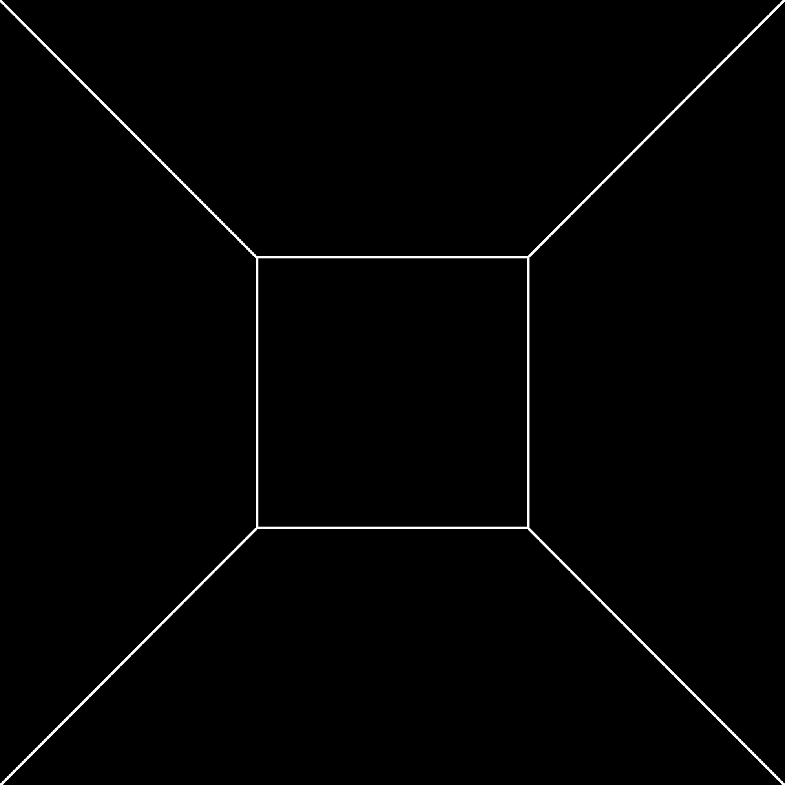

In poetry, the number of beginnings so far exceeds the number of endings that we cannot even conceive of it. Not every poem is finished—one poem is abandoned,
another catches fire and is carried away by the wind, which may be an ending, but it is the ending of a poem without an end.
